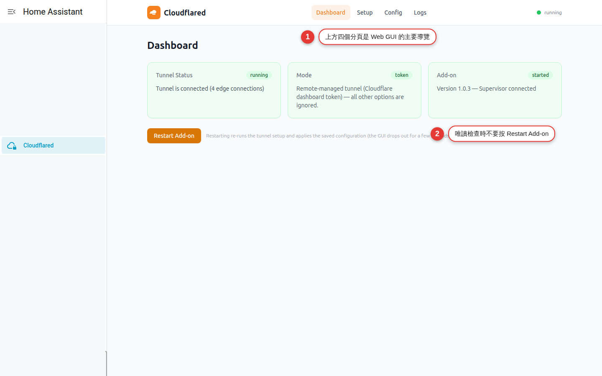

Dashboard：讀懂 Tunnel 健康狀態
用 Tunnel、Mode、Add-on 三張狀態卡分層判讀，理解 edge connections 是連到 Cloudflare edge 的就緒連線，不是訪客人數。這章只觀察、交叉測試與記錄，完全不按 Restart Add-on。
一張紅卡不等於整條服務壞掉
Dashboard 把三個不同問題放在一起：Tunnel Status 看 cloudflared 是否已有可用 edge connection，Mode 看設定屬於本機或 token 模式，Add-on 看 App 與 Supervisor 回報。它們彼此相關，卻不能互相替代。
例如客廳 Home Assistant 本機可用、Tunnel 顯示 stopped，問題多半在 connector 之前或之中；Tunnel running 但手機外網顯示 502，則 edge 已連上，應往 DNS、hostname、ingress 或 origin 查。只看顏色就重啟，常會把最有用的第一個錯誤洗掉。
三張卡與 edge connections 的心智模型
| 卡片／欄位 | 資料代表什麼 | 不能代表什麼 |
|---|---|---|
Tunnel：running | cloudflared metrics /ready 回報 readyConnections 大於 0 | 不保證 DNS、每個 hostname、origin 或登入頁正常 |
Tunnel：starting | metrics 可到達，但尚無 ready connection，或 readiness 尚未完成 | 不一定已失敗；啟動期間可能只是暫態 |
Tunnel：stopped | Web GUI 無法連到本機 cloudflared metrics；首次空白設定也會如此 | 不等於整個 Home Assistant 或 Web GUI 停止 |
| edge connections 數量 | 目前就緒的 connector-to-edge 連線數 | 不是使用者、瀏覽器分頁、hostname 或裝置數量 |
Mode：local | 沒有設定 token，由 App 本機管理 Tunnel | 不等於已完成授權或已 connected |
Mode：token | 設定了遠端管理 Tunnel token | 不代表 Cloudflare public hostname 已正確設定 |
| Add-on state | Supervisor 回報的目前 App 狀態 | 不等於 cloudflared readiness 或外部 URL 可用 |
| Supervisor connected | Web GUI backend 能讀到 Supervisor API 與版本／狀態 | 不等於 Cloudflare 網路可達 |
八步完成一次唯讀健康檢查
先從本機確認 Home Assistant
用家中 Wi-Fi 與本機網址登入，操作一個無風險頁面並記下現在時間。若本機也失敗，先處理 Home Assistant 或區網，不要把問題全部歸給 Tunnel。
經 Ingress 開啟 Dashboard
從 Cloudflared Web GUI 的 Home Assistant Ingress 進入，不直接公開或連接內部 8099。確認你在正確 Home Assistant 主機，避免把測試機的正常狀態當成正式主機。
逐字記錄 Tunnel Status
記錄
running、starting、stopped或 unknown，以及 edge connections 數量。只寫時間與非敏感結果，不截取 hostname、Tunnel ID、帳號或 IP。核對 Mode 是否符合設計
依第 4 章確認預期是 local 或 token。模式不符時先停下來和管理者核對，不進 Config 清 token，也不按 Restart 想讓它自己恢復。
讀 Add-on 與 Supervisor 狀態
記錄 App state、版本是否載入，以及文字是 Supervisor connected 或 unreachable。Supervisor unreachable 只說明管理 API 路徑異常，需和 Home Assistant App 詳細頁交叉確認。
到 Setup 交叉比對
本機模式看四步停在哪裡，token 模式看遠端管理提示；若有 prepare failed，記下時間。只瀏覽，不開授權 URL、不複製連結，也不因 stopped 立刻修設定。
到 Logs 找同一時間窗
先讀錯誤前後最小範圍，找第一個明確的 validation、authorization、DNS、network 或 origin 訊息。Logs 可能有 hostname、IP、UUID 與敏感 URL，記錄前必須遮罩。
用行動網路做外部測試
若服務原本已正式上線，手機關閉 Wi-Fi，開啟既有 HTTPS hostname，確認到正確登入頁且能持續更新。完成後回 Dashboard 再記一次狀態；整個流程不按 Restart Add-on。

常見狀態組合與下一步
| 組合 | 較合理的解讀 | 先做什麼 |
|---|---|---|
| stopped ＋ unconfigured | options 完全空白，fork 保留 GUI 而不啟動 Tunnel | 若是首次安裝屬預期；依第 4 章規劃，不 Restart |
| starting ＋ Supervisor connected | GUI 與管理 API 正常，cloudflared 尚未取得 ready connection | 等待短時間並看 Logs 的網路／協定訊息 |
| running ＋ edge connections > 0 | 至少一條 connector-to-edge 連線就緒 | 再測 DNS、hostname、origin 與登入，不直接宣布全數正常 |
| running ＋ 外部 404 | edge 可用，但 hostname／ingress rule 可能未匹配 | 核對請求 hostname、routes 與 catch-all |
| running ＋ 外部 502 | Cloudflare 可到 connector，但 origin 可能不可達或回應失敗 | 先在內網測 origin，再核對 service 協定、位址與 port |
| stopped ＋ prepare failed | 最近 setup 在 cloudflared 啟動前失敗 | 查 Logs 第一個明確錯誤，修正後才安排一次重啟 |
| 任何 Tunnel 狀態 ＋ Mode 不符 | 目前 options 的 token 狀態和維護計畫不同 | 停止，核對既有 Tunnel 擁有者與 Cloudflare 設定 |
| Supervisor unreachable ＋ HA App 正常 | Web GUI 到 Supervisor API 的狀態讀取失敗或暫態 | 重新整理、看 Home Assistant 系統狀態與最小 Logs |
| Dashboard unknown | health API 尚未成功載入或 GUI 正在失聯 | 先確認 Ingress／App 狀態，不把 unknown 當 stopped |
Dashboard 也有敏感與高影響操作
不按 Restart Add-on
唯讀巡檢沒有重啟理由。Restart 會用已儲存設定重跑 setup，讓 Tunnel 與 Web GUI 短暫中斷；若授權、DNS 或設定有問題，也可能再次觸碰那些流程。
不把 Dashboard 當公開監控頁
它是 Home Assistant Ingress 管理介面，應留在 HA 登入後。不要替內部 8099 建立 public hostname、port forwarding 或未驗證反向代理。
分享前移除識別資料
畫面或旁邊的 Setup／Logs 可能帶出版本、hostname、Tunnel UUID、帳號、IP 與授權 URL。求助時改寫成時間軸與狀態文字，避免整頁截圖。
不因 running 放寬存取
Tunnel readiness 不等於身分驗證。Home Assistant 仍應使用個人帳號、強密碼與多因素驗證；不必要的 additional hosts、catch-all 與高權限管理頁應移除。
保留本機退路
遠端健康不代表永遠可用。持續維護家中區網入口、備份與現場協助方式，避免將 Tunnel 變成唯一管理通道。
分清 Save 與 Restart
Dashboard Restart 使用目前已存 options；Config 的 Save & Restart 先修改 options 再重啟。後者會變更設定，兩者都不是診斷用的「重新整理」。
健康狀態的端到端驗收
| 層級 | 測試 | 通過條件 |
|---|---|---|
| Home Assistant 本機 | 家中 Wi-Fi 由本機網址登入與切頁 | HA 本身正常，保留 Tunnel 以外的入口 |
| Web GUI／Ingress | 從 App 詳細頁開 Dashboard 並切到 Setup、Logs | 管理頁可讀，沒有公開 8099 |
| Supervisor | 讀 Add-on 卡並對照 Home Assistant App 詳細頁 | 狀態一致，Supervisor connected 或已解釋暫態差異 |
| 模式 | 讀 Mode 並與維護文件比對 | local／token 符合預期管理責任 |
| Connector | 讀 Tunnel 卡與 edge connections | 正式運作時持續 running 且 ready connections 大於 0 |
| DNS／HTTPS | 手機行動網路開既有公開 hostname | HTTPS 到正確服務，不是另一個 origin 或錯誤 catch-all |
| 應用功能 | 登入後切換頁面並觀察即時更新 | 不只載入首頁，互動與長連線也正常 |
| Logs | 比對測試時間附近訊息 | 沒有持續新增 fatal、重複連線失敗或意外 route |
| 零變更 | 回顧操作紀錄 | 未 Restart、未 Save & Restart、未授權或改 DNS |
Dashboard 常見卡關
Tunnel 顯示 stopped，但 App 顯示 started
兩者可以同時成立：Web GUI service 還在，cloudflared metrics 卻不可達。先看 Setup 是否 unconfigured／prepare failed，再查 Logs；不要把 App started 當 Tunnel ready。
長時間停在 starting
代表 metrics 可到達但 ready connection 尚未建立。記下時間，檢查 Logs 的 DNS、UDP／QUIC、HTTP/2、時間同步與 Cloudflare 連線訊息；先排網路，不連續重啟。
edge connections 數量上下變動
短暫變動可能是重新協商或 edge 變化。若仍大於 0 且外部測試正常，先觀察；若反覆歸零並伴隨外部中斷，再用同一時間窗 Logs 排查。
running，但公開 hostname 顯示 502
running 只證明 connector 到 edge 有 ready connection。先從家中測 origin，再核對 route 的 service 協定、IP、port 與 Home Assistant proxy；不要重做授權。
running，但開到錯的服務或 404
核對瀏覽器 hostname、local options 或 Cloudflare public hostname 是否屬於目前模式，並檢查 additional hosts 與 catch-all 順序。先修 route 證據，不把問題誤判為 edge。
Add-on 顯示 Supervisor unreachable
重新整理一次，對照 Home Assistant App 詳細頁與系統狀態。若 App 仍運作，擷取已遮罩的 API／Ingress 錯誤摘要；不要公開整頁或為了測試額外開 port。
Mode 顯示 token，但原本預期 local
立即停止任何變更，確認是否已有管理者設定 remote Tunnel。不要在 Config 按移除 token 或 Save & Restart；那會改變 options、重啟並可能讓既有入口中斷。
狀態顯示 unknown 或頁面載入失敗
先判斷是 Ingress、Web GUI health API 還是整個 App 不可用。回 Home Assistant App 頁讀狀態與 Logs；unknown 不是 stopped，也不能靠按 Restart 當第一步。
Dashboard 常見問題
edge connections 是目前在線使用者數嗎？
running 就代表所有 hostname 都正常嗎？
edge connections 不是固定數字，需要重啟嗎？
Add-on started 和 Tunnel running 有什麼差別？
Dashboard Restart 和 Config Save & Restart 一樣嗎？
多久該看一次 Dashboard？
官方來源與版本提示
| 來源 | 查證重點 |
|---|---|
| WOOWTECH README：Dashboard | live tunnel status、edge connections、App state、Restart 與 Supervisor options 邊界 |
| Cloudflared Web GUI DOCS | 四頁功能、Ingress、空白設定與 restarted setup 行為 |
| 專案 metrics backend | /ready、readyConnections 與 running／starting／stopped 的實際判定 |
| 專案 Dashboard 原始碼 | 三張狀態卡、Mode、Supervisor connected 與 Restart 警告文案 |
| Cloudflare：Monitor Cloudflare Tunnels | Cloudflare 端 Tunnel 與 connector 健康狀態的官方觀察方式 |
| Cloudflare：Tunnel metrics | cloudflared metrics endpoint 與 connector metrics 的官方說明 |
| Cloudflare Status | 排除 Cloudflare 平台事件，不把區域性異常直接歸咎於家中設定 |